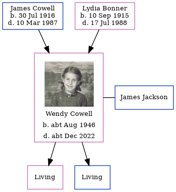

Wendy J Jackson (née Cowell) cAug 1946 - c2022
[ Home ] | [ Calendar ] | [ Surnames Index ] | [ Errors ] | [ Family History ]The child of James Cowell (an ironmonger's shop's assistant) and Lydia Bonner, Wendy Cowell, a cousin on the mother's side of Nigel Horne, was born in Thanet, Kent, England c. Aug 19461,2. She married James Jackson (with whom she had 2 surviving children Samantha and Damian) in Thanet around Nov 19663 (Oct/Nov/Dec).
She died c. Dec 2022.
Parents
- James Sidney was born on 30 Jul 1916
- Lydia Florence was born on 10 Sept 1915
Citations
- England & Wales births 1837-2006 - Findmypast
- England & Wales, Birth Index: 1916-2005 Online publication - Provo, UT, USA: The Generations Network, Inc., 2008.Original data - General Register Office. England and Wales Civil Registration Indexes. London, England: General Register Office. © Crown copyright. Published by permission of the Cont
- England & Wales, Marriage Index: 1916-2005 Online publication - Provo, UT, USA: The Generations Network, Inc., 2009.Original data - General Register Office. England and Wales Civil Registration Indexes. London, England: General Register Office. © Crown copyright. Published by permission of the Cont
Media
Wendy J Cowell
England & Wales births 1837-2006 - BMD/B/1946/3/AZ/000325/065
England & Wales marriages 1837-2005 - BMD/M/1966/4/AZ/000265/154
Family Tree
Map
Generated by ged2site. Last updated on Jul 3, 2024
Known Issues
Parent James is listed in the residence for 1953, but this child is not
Parent James is listed in the residence for 1954, but this child is not
Parent James is listed in the residence for 1955, but this child is not
Death date (abt Dec 2022) has no citations
Date of death is known, but not place